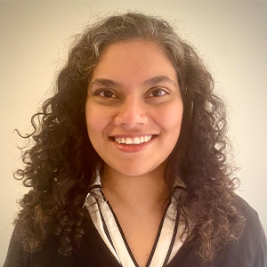
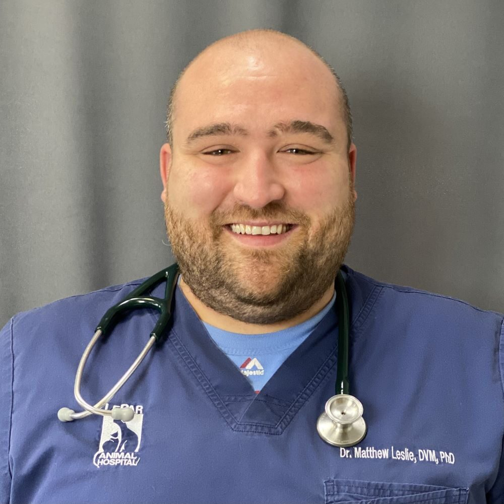
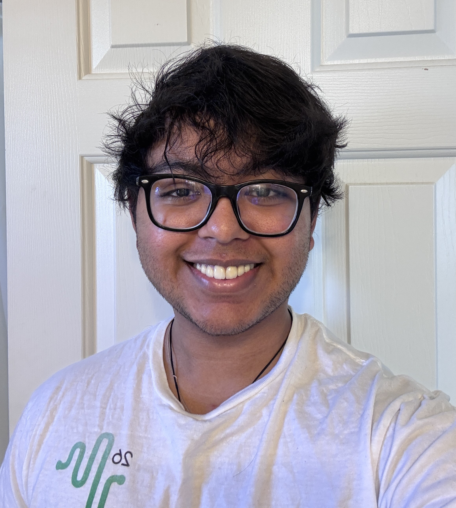

DPI Team
IDPH Team
Dr. Rukmini Manasa Avadhanam
Principal Investigator
Senior Research Associate at DPI. A trained learning scientist and instructional designer with a Ph.D. in Curriculum & Instruction.
Her research focuses on improving learning experiences for adult and K–12 learners through educational technologies and experiential learning. Within the One Health Research Program, she oversees program development, connects faculty mentors with student scholars, coordinates partnerships with local government sectors across Illinois, and leads the One Health Course module development.
View Profile
Dr. Anuj Tiwari
Co-Principal Investigator
Research Scientist at DPI, UIUC. Works at the intersection of geospatial science, AI, and One Health.
His research focuses on understanding connections among human, animal, and environmental health through AI-driven analytics, geospatial modeling, and decision-support systems. He leads initiatives in infectious disease surveillance, geospatial platform development, and One Health informatics. Within the Illinois One Health Scholars Program, he provides strategic leadership in program development, partnership building, and advancing interdisciplinary One Health research.
View Profile


Mayowa Elizabeth Adebowale
Graduate Research Assistant
Graduate student at UIC with a background in Biomedical Science and a strong interest in innovative medicine and public health.
Her interests center on the intersection of healthcare research, technology, and community health impact. As a Graduate Research Assistant, Mayowa supports the lead researchers in coordinating day-to-day operations of the program and contributes to external research, resource gathering, and program organization related to One Health initiatives and public health awareness in Illinois.

Aman Saji
Full Stack Developer
Undergraduate student in Computer Engineering at UIUC, working at DPI under Dr. Anuj Tiwari.
Aman contributes to the technical development of the One Health Scholars platform, building full-stack web infrastructure that supports the program's research and outreach goals. His work spans backend API development, database architecture, and frontend design, translating complex public health data into accessible, user-friendly digital tools.